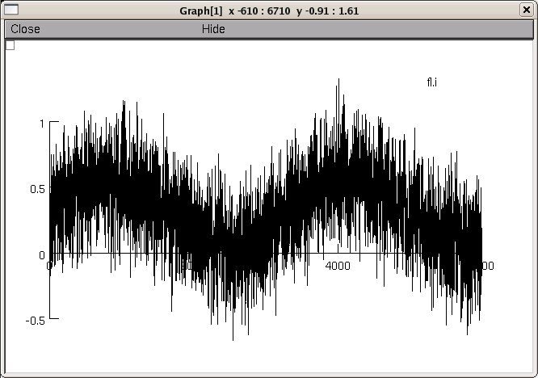

This is the readme for models associated with the paper
Kondgen H, Geisler C, Fusi S, Wang XJ, Luscher HR, Giugliano M (2008)
The dynamical response properties of neocortical neurons to temporally
modulated noisy inputs in vitro. Cereb Cortex 18:2086-9
Neocortical neurons are classified by their current-frequency
relationships. This is a static description and it may be inadequate
to interpret neuronal responses to time-varying stimuli.
Theoretical studies (Brunel et al., 2001; Fourcaud-Trocme et al. 2003;
Fourcaud-Trocme and Brunel 2005; Naundorf et al. 2005) suggested that
single-cell dynamical response properties are necessary to interpret
ensemble responses to fast input transients. Further, it was shown
that input-noise linearizes and boosts the response bandwidth, and
that the interplay between the barrage of noisy synaptic currents and
the spike-initiation mechanisms determine the dynamical properties of
the firing rate.
In order to allow a reader to explore such simulations, we prepared a
simple NEURON implementation of the experiments performed in Kondgen
et al., 2008 (see also Fourcaud-Trocme al. 2003; Fourcaud-Trocme and
Brunel 2005).
In addition, we provide sample MATLAB routines for exploring the
sandwich model proposed in Kondgen et al., 2008, employing a simple
frequdency-domain filtering.
The simulations and the MATLAB routines are based on the linear
response properties of layer 5 pyramidal cells estimated by injecting
a superposition of a small-amplitude sinusoidal wave and a background
noise, as in Kondgen et al., 2008. Similarly to the experiments
performed there, the simulations quantify the evoked firing
probability across many stimulation trials and a wide range of
oscillation frequencies (1-1000 Hz). The (dynamical) response is
quantified in terms of amplitude and phase-shift, while changing noise
statistics.
Neocortical neurons track unexpectedly fast transients, as their
response amplitude has no attenuation up to 200 Hz. This cut-off
frequency is higher than the limits set by passive membrane properties
(~50 Hz) and average firing rate (~20 Hz) and is not affected by the
rate of change of the input.
These model files were supplied by Michele Giugliano.
A short demo has been created by
Michele Giugliano & Vincent Delattre
Brain Mind Institute, EPFL of Lausanne
Demonstrating: 1) noisy stimulation, modulated in time
2) instantaneous firing rate, estimate and quantitative fit
The demo uses a single-compartmental, conductance-based model neuron
in a current-clamp stimulation. Each spike is counted and has it's
time recorded, then the output firing rate is graphically compared
with the input. When started (Click the run button) the simulation
produces the following graphs of spikes and injected current

In black, the instantaneous firing rate [Hz] is indicated (i.e. the
PSTH) In red, the best fit sinusoid. In blue the sinusoid is displayed
which is subsequently modified by noise to produce the input.